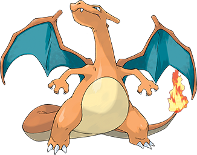

Pokémon is a Japanese media franchise consisting of video games, animated series and films, a trading card game, and other related media. The franchise takes place in a shared universe in which humans co-exist with creatures known as Pokémon, a large variety of species endowed with special powers. The franchise's primary target audience is children aged 5 to 12, but it is known to attract people of all ages. 
The franchise originated as a pair of role-playing games developed by Game Freak, from an original concept by its founder, Satoshi Tajiri. Released on the Game Boy on 27 February 1996, the games became sleeper hits and were followed by manga series, a trading card game, and anime series and films.